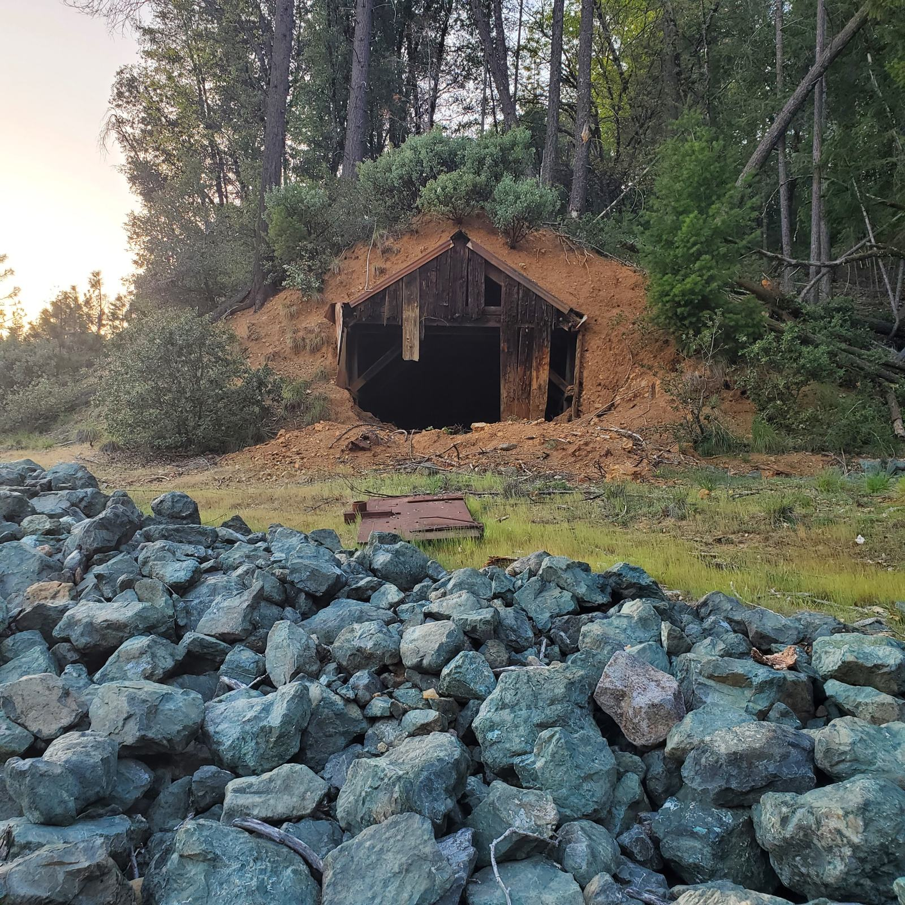

Planning your visit
| Hours | Hours to be announced before opening |
|---|---|
| Admission | Pricing to be announced |
| Groups | Private group tours (10 or more) by appointment. Contact us. |
Nevada City, CA 95959
Located in the Sierra Nevada foothills about 60 miles northeast of Sacramento. Take Highway 49 north to Nevada City.
Street address or meeting point for GPS
Parking details
Self-guided and docent-led
Self-guided Walking Tour
Included with every visit.
Guided Docent Tour
About 90 minutes. Reservations required. Days and times
Private Group Tour
About 2 hours, for groups of 10 or more, by appointment.
The mine and its cleanup
The Lava Cap Mine property is part of a U.S. Environmental Protection Agency (EPA) Superfund cleanup related to arsenic from historic mine tailings. We believe visitors, teachers and families deserve a plain explanation, so this page will describe which areas are open, what the cleanup involves and what safety guidance applies.
Misty to supply: current EPA status, areas open to the public, any access rules, and who reviewed this wording

Welcome for all visitors
We are committed to making Lava Cap accessible to all visitors. Parts of the historic site involve uneven terrain, so please contact us in advance and we will do our best to accommodate your needs. Confirm wheelchair access and welcome center details